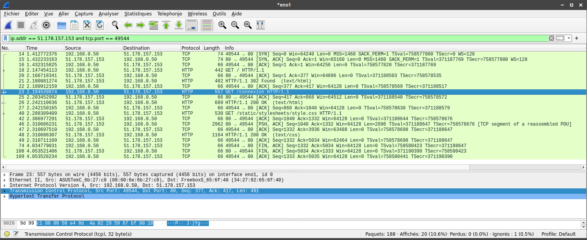

Le protocole TCP
Un protocole pour communiquer
Voici deux petites scénettes présentant la même situation, la première comme elle pourrait se passer dans la vie de tous les jours, la seconde est une version imagée de ce qui se passe entre deux ordinateurs.
Dans le monde réél :
Emma rentre du lycée, Paul lit son journal.
Emma – Coucou c’est moi, je suis rentrée ! J’ai quelque-chose à te dire...
Il continue de lire, sans la remarquer.
Emma – Papa ! Tu m’écoutes ?
Paul – Oui mon poussin, que se passe t’il ?
Emma – J’ai quelque-chose à te dire à propos de mon devoir de maths.
Paul – Je t’écoute...
Emma – J’aimerai que tu m’aides, je n’ai pas tout compris.
Paul – Je fini de lire cet article et j’arrive. Commence par relire ta leçon !
Emma se dirige dans sa chambre en traînant son sac.
Sur un réseau informatique :
emma – je souhaite communiquer avec paul
un laps de temps s’écoule, sans réponse
emma – je souhaite communiquer avec paul
paul – bien reçu, je t’écoute.
emma – bien reçu, nous sommes prêts à communiquer.
emma – j’ai une information à transmettre : «A propos de mon devoir de maths, j’ai besoin d’aide.»
paul – j’ai bien reçu cette requête.
paul – voilà la réponse : «je vais t’aider, va dans ta chambre et relis ta leçon.»
emma – j’ai bien reçu ta réponse.
paul – fin de transmission.
emma – bien reçu, fin de transmission.
paul – bien reçu.
- Dans la première scénette, qu'est ce qui indique si la communication se passe bien entre les deux protagonistes ?
- Et dans la seconde scénette ?
- Comment l'appelez-vous dans le cadre de vos échanges sur les réseau sociaux ?
- La communication entre deux ordinateurs se fait en trois temps : une demande de communication (synchronisation), des échanges d'information puis une demande de fin de transition. Réaliser le découpage de la seconde scénette selon ces trois temps.
- Les règles de politesse imposent aussi un découpage en trois temps. Quel serait ce découpage lorsqu'un inconnu me demande son chemin dans la rue.
Le protocole TCP
Le protocole permet à deux ordinateurs d’interagir et de se comprendre. Pour communiquer entre eux, ils doivent avoir le même protocole. Sur Internet, le principal protocole utilisé est le TCP (Transmission Control Protocol). Il gère les informations qui sont placées dans des paquets échangés entre les ordinateurs.
Le protocole TCP a été conçu par le ministère de la défense américaine pendant la guerre froide. Sa mission est d'être très robuste : il doit assurer que les communications se déroule bien c'est-à-dire que les données sont échangées dans leur intégralité, dans le bon ordre et sans doublons. Pour cela il intègre des mécanisme :
- de détection de pertes d'un paquet
- de détection de pertes d'information dans un paquet
- de réémission des paquets perdus
- de détection de données reçues en double
- de réorganisation des paquets arrivés dans le mauvais ordre
Toutes les informations supplémentaires pour le contrôle de la communication sont placés dans l'entête du paquet, les informations échangées sont regroupées dans le corps.
L'entête contient, entre-autre :
- une double numérotation (sequence et ack)
- le type du paquet : SYN pour une demande de synchronisation, FIN pour une fin de connexion, ACK pour un accusé de réception.
Trois études de cas
1er cas : tout va bien
Dans cette situation, tous les paquets échangés sont bien reçus.
2ème cas : la requête est perdue
Dans cette situation, la demande de données du serveur A n'arrive pas à destination.
3ème cas : la réponse est perdue
Dans cette situation, la réponse du serveur B n'arrive pas à destination.
Utiliser un analyseur de paquets
Un analyseur de paquets permet d'écouter les paquets échangés par un ordinateur et notamment les informations utilisées par le protocole TCP. Sur la capture suivante (logiciel Wireshark), on peut identifier les 3 premiers paquets permettant la demande de synchronisation et les 3 derniers permettant la demande de fin de connexion.
Une alternative à TCP : le protocole UDP
Le point fort du protocole TCP est sa robustesse, au détriment de la rapidité. Ce protocole est donc remplacé par le protocole UDP lorsqu'on a pas besoin de la robustesse de TCP. C'est le cas par exemple pour les visioconférence, la lecture d'une vidéo en streaming ou bien lors de l'envoie de sa trace GPS lors d'une sortie en VTT. Dans ces cas, la perte de quelques paquets n'est pas si grave, du moment qu'il reste suffisamment de données exploitables.